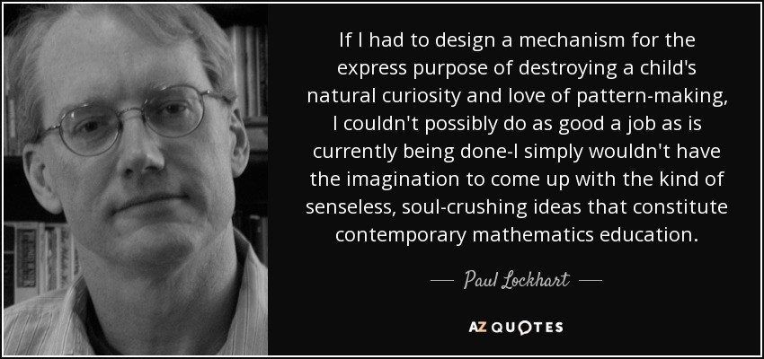

Paul Lockhart, a Columbia math PhD, former Brown professor, and K-12 math teacher, writes in the influential essay A Mathematician’s Lament of a nightmare world where children are not allowed to listen to or play music until they have spent over a decade mastering music notation and theory, spending classes transposing sheet music into a different key. In art class, students study colors and applicators, but aren’t allowed to actually paint until college. Sound absurd? This is how math is taught–we require students to spend years doing rote memorization, and learning dry, disconnected “fundamentals” that we claim will pay off later, long after most of them quit the subject.
Unfortunately, this is where several of the few resources on deep learning begin–asking learners to follow along with the definition of the Hessian and theorems for the Taylor approximation of your loss function, without ever giving examples of actual working code. I’m not knocking calculus. I love calculus and have even taught it at the college level, but I don’t think it’s a good or helpful introduction to deep learning.
So many students are turned off to math because of the dull way it’s taught, with tedious, repetitive exercises, and a curriculum that saves so many fun parts (such as graph theory, counting and permutations, group theory) to so late that everyone except math majors has abandoned the subject. And the gate-keepers of deep learning are doing something similar whenever they ask that you can derive the multivariate chain rule or give the theoretical underpinnings of KL divergence before they’ll teach you how to use a neural net to handle your own projects.
We’ll be leveraging the best available research on teaching methods to try to fix these problems with technical teaching, including:
- Teaching “the whole game”–starting off by showing how to use a complete, working, very usable, state of the art deep learning network to solve real world problems, by using simple, expressive tools. And then gradually digging deeper and deeper into understanding how those tools are made, and how the tools that make those tools are made, and so on…
- Always teaching through examples: ensuring that there is a context and a purpose that you can understand intuitively, rather than starting with algebraic symbol manipulation
- Simplifying as much as possible: we’ve spent months building tools and teaching methods that make previously complex topics very simple
- Removing barriers: deep learning has, until now, been a very exclusive game. We’re breaking it open, and ensuring that everyone can play
- …and many more. I’ve discussed some of our approaches to teaching in more detail below.
In the end, what we’re talking about is good education. That’s what we most care about. Here are more of our thoughts on good education:
Good education starts with “the whole game”
Just as kids have a sense of what baseball is before they start batting practice, we want you to have a sense of the big picture of deep learning well before you study calculus and the chain rule. We’ll move from the big picture down to the details (which is the opposite direction than most education, which tries to teach all the individual elements before putting them together). For a good example of how this works, watch Jeremy’s talk on recurrent neural networks–he starts with 3 line RNN using a highly featured library, then removes the library builds his own architecture using a GPU framework, and then removes the framework and builds everything from scratch in gritty detail just using basic python.
In a book that inspires us, David Perkins, a Harvard education professor with a PhD from MIT in Artificial Intelligence, calls the approach of not doing anything complicated until you’ve taught all the individual elements first a disease: “elementitis”. It’s like batting practice without knowing what the game baseball is. The elements can seem boring or pointless when you don’t know how they fit in with the big picture. And it’s hard to stay motivated when you’re not able to work on problems you care about, or have a sense of how the technical details fit into the whole. Perhaps this is why studies have shown that the intrinsic motivation of school children steadily declines from 3rd grade to 8th grade (the only range of years studied).
Good education equips you to work on the questions you care about
Whether you’re excited to identify if plants are diseased from pictures of their leaves, auto-generate knitting patterns, diagnose TB from x-rays, or determine when a raccoon is using your cat door, we will get you using deep learning on your own problems (via pre-trained models from others) as quickly as possible, and then will progressively drill into more details. You’ll learn how to use deep learning to solve your own problems at state-of-the-art accuracy within the first 30 minutes of the first lesson! There is a pernicious myth out there that you need to have computing resources and datasets the size of those at Google to be able to do deep learning, and it’s not true.
Good education is not overly complicated.
Have you watched Jeremy implement modern deep learning optimization methods in Excel? If not, go watch it (starts at 4:50min in the video) and come back. This is often considered a complex topic, yet after weeks of work Jeremy figured out how to make it so easy it seems obvious. If you truly understand something, you can explain it in an accessible way, and maybe even implement it in Excel! Complicated jargon and obtuse technical definitions arise out of laziness, or when the speaker is unsure of the meat of what they’re saying and hides behind their peripheral knowledge.
Good education is inclusive.
It doesn’t put up any unnecessary barriers. It doesn’t make you feel bad if you didn’t start coding at age 12, if you have a non-traditional background, if you can’t afford a mac, if you’re working on a non-traditional problem, or if you didn’t go to an elite college. We want our course to be as accessible as possible. I care deeply about inclusion, and spent months researching and writing each of my widely read articles with practical tips on how we can increase diversity in tech, as well as spending a year and a half teaching full-stack software development to women full-time. Currently deep learning is even more homogenous than tech in general, which is scary for such a powerful and impactful field. We are going to change this.
Good education motivates the study of underlying technical concepts.
Having a big picture understanding gives you more of a framework to place the fundamentals in. Seeing what deep learning is capable of and how you can use it is the best motivation for the more dry or tedious parts.
“Playing baseball is more interesting than batting practice, playing pieces of music more interesting than practicing scales, and engaging in some junior version of historical or mathematical inquiry more interesting than memorizing dates or doing sums,” writes Perkins. Building a working model for a problem that interests you is more interesting than writing a proof (for most people!)
Good education encourages you to make mistakes.
In the most viewed TED talk of all time, education expert Sir Ken Robinson argues that by stigmatizing mistakes, our school systems destroy the children’s innate creative capacity. “If you’re not prepared to be wrong, you’ll never end up with anything original,” says Robinson.
Teaching deep learning with a code-heavy approach in interactive Jupyter notebooks is a great setup for trying lots of things, making mistakes, and easily changing what you’re doing.
Good education leverages existing resources
There is no need to reinvent teaching materials where good ones already exist. If you need to brush up on matrix multiplication, we’ll refer you to Khan Academy. If you’re fascinated by X and want to go deeper, we’ll recommend you read Y. Our goal is to help you achieve your deep learning goals, not to be the sole resource in getting you there.
Good education encourages creativity

Lockhart argues that it would be better to not teach math at all, then to teach such a mangled form of it that alienates most of the population from the beauty of math. He describes math as a “rich and fascinating adventure of the imagination” and defines it as “the art of explanation”, although it is rarely taught that way.
The biggest wins for deep learning will come when you apply it to the outside domains you’re an expert in and the problems you’re passionate about. This will require you to be creative.
Good education teaches you to ask questions, not just to answer them
Even those who seem to thrive under traditional education methods are still poorly served by them. I received a mostly traditional approach to education (although I had a few exceptional teachers at all stages and particularly at Swarthmore). I excelled at school, aced exams, and generally enjoyed learning. I loved math, going on to earn a math PhD at Duke University. While I was great at problem sets and exams, this traditional approach did me a huge disservice when it came to preparing me for doctoral research and my professional career. I was no longer being given well-formulated, appropriately scoped problems by teachers. I could no longer learn every incremental building block before setting to work on a task. As Perkins writes about his struggles with finding a good dissertation topic, I too had learned how to solve problems I was given, but not how to find and scope interesting problems on my own. I now see my previous academic successes as a weakness I’ve had to overcome professionally. When I began studying deep learning, I enjoyed reading the math theorems and proofs, but this didn’t actually help me build deep learning models.
Good education is evidence-based
We love data and the scientific method, and we are interested in techniques that have been supported by research.
Spaced repetition learning is one such evidence-backed technique, where learners revisit a topic periodically, just before they would forget it. Jeremy used this technique to obtain impressive results in teaching himself Chinese. The whole game method of learning dovetails nicely with spaced repetition learning in that we will revisit topics, going into more and more low level details each time, but always returning to the big picture.